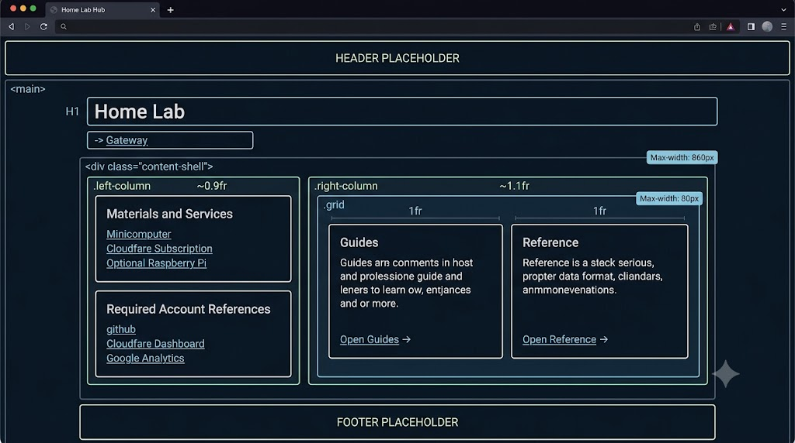
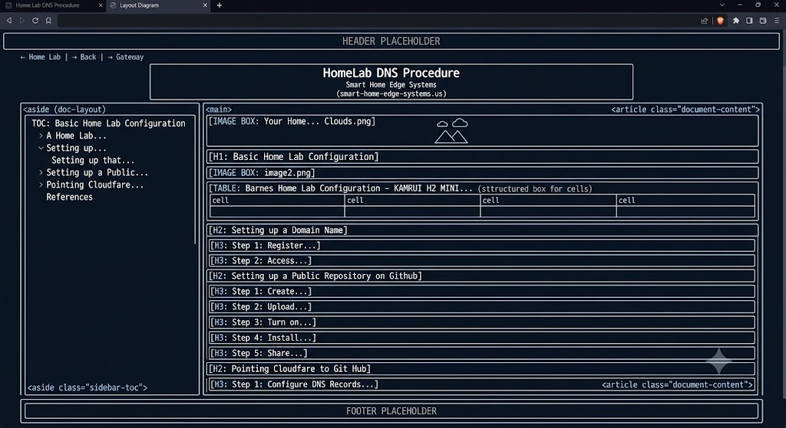

If it's not one thing, I must admit that building a web page is hard. It is even harder to build a website. I have learned some basic tricks along the way, and I want to share with you a simple way to build your own website.
The 1st thing you need is a structure for your site, and then you need to start building web pages. I suggest you hold off on designing the website for now. Just get a simple one up and running. Then try to manipulate it to meet your needs. They say the hardest thing about writing, painting, or any creative project is getting the first line or stroke on the page. Then change it to be your design. That is how we are going to start. Don't take the lazy way out and pay for a site developer. You will never appreciate that design. They will have their hooks in you forever for modifications and maintenance.
Try this quick solution first. If you don’t like what you have, what have you lost.
Let's set up our repository first. Open up VS Code (reference the VS Code procedure) and open the top level folder you created. This is the root of your GIT repositories.
Mine looks like this.
C:\Users\me\Documents\Proxmox\WebDesign.
You should have created three repositories when you ran the home-lab-dns-procedure.
Mine looks like this.
WebDesign |
|---|
Create Initial Files.
Creating your tools directory
As an example:
My GitHub repository is mounted under
C:\Users\barne\Documents\Proxmox\WebDesign.
In this directory is my repository called smart-home-edge-systems/ which is mounted via GitHub Desktop to my repository. This was done in the home-lab-dns-procedure
In order to start building your website we have created a set of tools that will help you set up and maintain your site.
Download these tools via the WebTools.zip file
Uncompress this file into a folder just above your repository. I placed the tools folder from the zip file under
WebTools/ (Absolute Root Directory) |
|---|
This same directory is where my GitHub repository is located.
Editing the SetupSite script.
We will need to make a few changes to these files as follows:
On a windows machine right click on the View Menu in VSCode and select Explorer. Drill down in the explorer window until you see the SetupSite.ps1 file. Click on it. It will open up in the VSCode Editor.
At this point you can make your changed my hand in the Editor Window and press CTRL S to save them or you can use the Continue or CoPilot Chat sessions
In the setup_site file: You must update the entry for:
set "TARGET_DIR= enter the exact location of your GitHub repositories
The entry called: set "CATEGORIES= contains a list of subpages for your website. You can leave these for now or change them in this file for your own design. You can always rename, copy or delete these later. Some examples might be Family, Friends, (For a pictures only web site excetera).
On a windows machine right click on the View Menu in VSCode and select terminal. This will open up a terminal window in the bottom section of your VSCode Window. Type in:
cd [path to your WebTools directory] and press enter
Your prompt will look something like this
PS C:\Users\me\Documents\ Proxmox\WebDesign >
If you type:
dir and press enter.
You will see your repositories, a directory called tools, and a script called setup.bat.
Enter:
setup_site.bat and press enter
The script will execute and build your web directory structure.
When it finishes, it will open up VS Code so that you can view your newly create website.
Now that we have all of that, let me explain a few things that you just did.
We just created your web site directory structure on your
drive that looks like this:WebTools/ (Absolute Root
Directory) |
|---|
In VS Code you can browse around and see various things. Most of these files are empty at this time and we can help you get started from this point. None of this is actually in your repository yet so if you want you can delete all of this and rerun the script as you want. Once you are happy with what is on your disk you will need to publish it. Remember you can use VSCode Continue to help you make changes to your script to do whatever you describe.
Publish Your New Web Pages
In order to publish all of this to GitHub you will need to open up GitHub Desktop.
When you open GitHub Desktop the first thing you will see are the upcoming changes that are pending. In the middle of the left column you will see a block with a Round Circle beside it. It requires an entry in this block. Enter something like "Create New Web Site". You can additionally add in a detailed description in the description field if you want or optionally leave it blank. Select the Blue Commit to main box.
When you do that you will get a new window that is asking you to Push Origin. Select that blue button as well.
Remember this process because every time you want to push your changes you will want to run these steps.
Verify the push
In order to verify the push was successful you will need to perform the following:
In the top Left corner of GitHub Desktop you will see your repository name. Right click on it and select View on GitHub. A window will open up in your blowser. Select the Actions menu and you will see your workflows. If ther eis a green circle with a checkbox next to your workflow run the push was successful.
If it is a red circle with an x in it you will need to clear it.
If you select the 3 dots on the far right next to your failed entry and select view workflow file.
In this window on the top right you will se a Re-run jobs button. Select and Select Re-run Failed jobs.
Your push should run again.
Finishing up the Initial Web Site Build
At this point we have a structure but no actual content. Lets fix that, Here is a basic view of what we are going to do.
Your main page structure will look like this once we have completed the following steps:

Your intermediate page will look like this:

And your lower level (main content) web pages will look like this

And all of this can be changed or modified any way you want. We will show you how to do that and it's fairly easy to modify your new website structure.
Lets look at your website in VS Code
If you want to use VS Code Continue to populate your web pages you would follow this procedure - BUT DON'T DO THIS - IT IS THE HARD WAY. This is because VS Code Continue can't access the file system directly. I just waant to show you what the easiest way to do things first. This is similar to whet the SetupSite script did.
Here are the commands and prompts you can use in your chat
assistant (like |
|---|
Code 5: New WebTools directory structure
Since we have completed step one of that procedure by running the script earlier we are almost there. Let me show you an easier way to build your web site.
Lets Build your Web Pages
I just used the Continue chat box and told it what I wanted. It kept returning the block of code needed to give to CoPilot to build the website. Here is what I came up with after a few iterations.
I am starting a brand new, dark-themed static website from
scratch. Please write the complete, clean, and responsive code
for all the files across my workspace directories using the
styling and layouts specified below. |
|---|
I want to enter this command (That I created using Continue) To execute in CoPilot.
I told the Continue Chat the basic color scheme I wanted.
In Iteration 1 I told it to build the foundation root files needed to run the website.
In Iteration 2 I told it to build the foundation root page.
In Iteration 3 I told it to build the first layer pages.
In the final Iteration 4 I told it to build the second layer pages.
Executing the CoPilot Command
Step 1: Generate the Website with Copilot Edits
Open VS Code. |
|---|
Step 2: Preview Your Website Locally
Navigate to the Explorer window in VS Code (the icon in the
top-left corner that looks like a stack of documents). |
|---|
Step 3: Making Further Iterative Changes
To continue modifying your site, you can use the hybrid workflow between Continue (to formulate complex prompts) and Copilot (to execute the code):
Draft in Continue: Use the Continue extension to build up and
refine the |
|---|
Step 4: Save and Publish Your Progress
Once you are satisfied with the look and functionality of
your |
|---|
Creating your sub-pages using Microsoft Word.
Many of us have created a MS Word document or at least we know how to use Word to edit pages. Let's start with a simple Word document with some basic context.
The basic tricks with word. Create or use a template. |
|---|
Technical Documentation Workflow: Word to HTML via Pandoc
This section outlines the workflow for converting Microsoft Word documentation (docx) into clean, standalone HTML pages using Pandoc and PowerShell, complete with automated Table of Contents (TOC) generation and a structured local-to-production deployment model.
Build tool Functionality
Here is a description of the functionality embedded in this tool.
End-to-End Pipeline Flow
Your publishing toolchain operates as a synchronized bridge between Microsoft Word authoring and a static HTML output format. The system flows through two major phases: Authoring & Preparation (Word) and Build & Compilation (PowerShell/Pandoc).
Phase 1: Authoring & Word Processing (WordMacros.vba)
Before conversion, the source Word document is prepared using the VBA publishing macro (SyncPublishAndSaveDoc):
Path & Field Normalization: Scans and normalizes external link paths (INCLUDETEXT and INCLUDEPICTURE) against local project subfolders (project_snippets, project_images, etc.).
Field & Reference Updates: Refreshes all document fields, Table of Contents (TOC), and Figures.
Text Block Formatting: Identifies styles matching "TextBlock" or "Code", converting internal tabs to spaces and hard paragraph returns (^p) into soft line breaks (^l) to ensure clean translation later.
Export: Automatically saves the document and generates a synchronized PDF archive within a local project_pdfs directory.
Phase 2: Automated Build & Conversion (build.ps1 + scripts/)
The PowerShell script orchestrates the transformation from .docx to structured HTML:
Discovery & Environment Setup: document-discovery.ps1 locates target source documents, while common.ps1 initializes dual console/file logging.
Pandoc Translation: pandoc-functions.ps1 invokes Pandoc, passing the document through the custom HTML template (templates/template.html) and the Lua filter (filters/collapsible-downloads.lua).
Lua Enhancement: collapsible-downloads.lua intercepts level-5 headings (#####) in the document and converts them into interactive HTML accordion drop-down boxes for asset bundles and downloads.
Post-Processing & Sanitization: html-functions.ps1 and asset-functions.ps1 clean up the generated markup, normalize media links, wrap data tables for responsive viewing, and finalize the web assets for deployment.
📁 Root/ ├── 📄 build.ps1 # Core PowerShell orchestrator (pipeline runner) ├── 📁 support/ │ └── 📄 WordMacros.vba # Word VBA macro for pre-publishing normalization & PDF export ├── 📁 scripts/ │ ├── 📄 asset-functions.ps1 # Media link normalization, table wrapping, & ZIP packaging │ ├── 📄 common.ps1 # Centralized logging engine and console/file tracer │ ├── 📄 document-discovery.ps1 # Flexible single-file or batch .docx source file finder │ ├── 📄 html-functions.ps1 # HTML cleanup, label auto-numbering, and formatting routines │ └── 📄 pandoc-functions.ps1 # Pandoc conversion wrapper and execution engine ├── 📁 filters/ │ └── 📄 collapsible-downloads.lua # Pandoc Lua filter converting level-5 headings into accordions ├── 📁 templates/ │ └── 📄 template.html # Responsive 2-column HTML template (with independent TOC scroll) └── 📁 prompts/ └── 📄 technicial-review.md # Technical guidelines for preserving code, commands, & syntax |
|---|
Part 1: Preparing Your Microsoft Word Document
Before running any scripts, ensure your master Word document is properly formatted. Proper formatting in Word minimizes manual HTML or Markdown editing later.
Heading Hierarchy: * Set the main document title and major section headers to Heading 1.
Set the first level of sub-sections to Heading 2.
Set the second level of sub-sections to Heading 3.
Sub-sections, or minor labels to Heading 4.
Set captions using the Caption Style
Inserted TextBlocks are formatted as TextBlock while external code snippets are using the Code Style.
Elements: Verify that all Word tables are clean and the built-in Table of Contents is fully updated.
Make sure the TOC has been deleted (The script will create it) and that you have deleted the Main Title at the top of your document. The script will use the filename for the Title for the document.
File Naming: Ensure the file names for your .docx and target .html files are entirely lowercase. Use dashes (-) instead of spaces for readability (e.g., my-home-lab-guide.docx).
Clean File Type: If working from a macro-enabled document (.docm), save it as a clean .docx file to strip out unnecessary background metadata.
Make sure the Template is referenced and that you used the formatting tricks above.
When you are satisfied with your document publish it to the Repository. Under Home select the MyMacros section on your toolbar. Under there you should see a SyncPublishAndSaveDoc Macro. If you do not see this make sure that your template is loaded under File Options (see above). Select the SyncPublishAndSaveDoc Macro. This macro will update all of your internal doc references including external links and caption numbers. It will create the TOC and generate an PDF file that will be sent to the next phase of the build process. Select the default settings if prompted for all popups that may occur.
💡 Pro-Tip: If you see rendering issues in the final HTML output, it is usually faster to update your master Word doc and rerun the script than it is to manually hack the HTML code.
Step 1: Your Local Workspace
Using Visual Studio Code. Your layout template (template.html) should already be created and present in your working directory along with the entire tool chain I have provided you..
It is important to keep your local project folder organized on your computer using the following layout during development:
Part 2: Convert Word to Markdown and then finally to HTML
This extracts your media and builds a clean Markdown file for verification.
I have gone through extensive passes through VS Cdoe Continue Gemini 3.5 Flash and/or using use a web browser and open https://gemini.google.com/app. In this window you can ask it to generate Power Shell Code for you. I have generated a PowerShell script using Gemini for assistance.
What Goes on the Web Server
Once Pandoc generates your local assets, the production ready files are synchronized to your working repository path (defined within your deployment script). Local files like template.html and output.md stay safely on your local hard drive.
A typical target web directory structure looks like this:
WebTools/ (Absolute Root Directory) |
|---|
From this tree you can see that My website is called smart-home-edge-systems which is also the name of my repository. This is where things will get placed when the tool is finished.
Editing the build.ps1 script for use.
The following entries MUST be edited in the build.ps1 script
You can find the destination entry on approximately line number 106
$DeployRoot = [IO.Path]::GetFullPath((Join-Path $ProjectRoot "..\smart-home-edge-systems"))
You can also find the source repository name on approx. line 96
$DocBasePath = [IO.Path]::GetFullPath((Join-Path $ProjectRoot "..\site-documentation"))
The document name you want to use is on line 4 and is optional if you use the command line options (Recommended):
[string]$Document = "home-lab\guides\1-home-lab-install-procedure.docx",
Now this line is used as the default if you just enter build.ps1. You have options for the command line that allow more script interaction:
Using the build.ps1 command line in a power shell window
The script will break down a command line entry like this:
If your $Document is defined as "home-lab\guides\1-home-lab-install-procedure.docx"
Then the following will be derived:
SiteName = Extracts the top-level directory or site grouping (e.g., home-lab).
TargetFolder = Extracts the category or subfolder classification such as your validated
targets like guides or reference.
DocBaseName = Extracts the file name of the document without its file extension
(e.g., 1-home-lab-install-procedure),
which is ideal for naming output HTML files or URL slugs.
Extension = Extracts just the file extension and strips off the leading dot
(e.g., docx), ensuring you are validating the correct source file type.
FileName = Retains the full file name including its extension
(e.g., 1-home-lab-install-procedure.docx).
All of these are derived from your simple
build.ps1 -Document home-lab\guides\1-home-lab-install-procedure.docx"
Of course if you desire you can use additional command line prompts as follows
-SiteName "home-lab"
-TargetFolder "guides"
If you eliminate this entry it will loop through the SiteName folder
- FileName "1-home-lab-install-procedure.docx"
If you eliminate this entry it will loop through the SiteName/Directory folder
The debug output will go to the build\logs directory, or you can use the command line prompt -DebugMode to get these debug entries output to the console.
Viewing your Website before publishing it
After you execute the build.ps1 script successfully you can view the newly formatted web site inside on VSCode before you push it to your web server.
To do this perform the following steps:
Navigate to the Explorer window in VS Code (the icon in the
top-left corner that looks like a stack of documents). |
|---|
This will launch a copy of your web page (selected in the explorer window) and you can see what it will look like before you publish it formally.
How to insert Citations
Using Gemini to create a ChatGPT query to rebuild the citations:
Use CoPilot to create a References Section of your Word Document.
I typed this into my Copilot Window: "the # sign tells copilot to reference this file"
#1-home-lab-install-procedure.html please provide sources where this content may be found. I am looking for external web pages that may be sources for the content and also possible further reading references |
|---|
#1-home-lab-install-procedure.html please provide sources where this content may be found. I am looking for external web pages that may be sources for the content and also possible further reading references
CoPilots Output:
Below are external pages that could reasonably support the content in 1-home-lab-install-procedure.html. They are grouped by topic and distinguish likely source material from useful further reading.
Likely Sources
Proxmox VE installation and administration
These support the ISO installation, VM/LXC terminology, bridges such as vmbr0 and vmbr1, resource allocation, repository configuration, and GPU passthrough sections.
Community installation scripts
The installation commands in the document appear to come directly from the Proxmox Community Scripts project:
The document should identify these as third-party community-maintained scripts. They execute remote shell code, so readers should inspect the scripts before running them.
Home Assistant
These support the HAOS VM, Ollama integration, Wyoming Protocol, and local voice assistant sections.
Ollama and local AI
These support commands such as ollama pull, the local API on port 11434, model names, embeddings, and Home Assistant connectivity.
Docker, Piper, Whisper, and Wyoming
These support the docker-compose.yaml, Piper text-to-speech, Whisper speech-to-text, exposed ports, mounted volumes, and Home Assistant integration steps.
Pi-hole and NGINX Proxy Manager
These support the DNS filtering, reverse proxy, container deployment, and web management sections.
Twingate
These support the connector token, private network access, and secure remote access sections.
SSH and PuTTY
These support Ed25519 key generation, PuTTY .ppk files, authorized_keys, SSH permissions, and passwordless login.
Further Reading
The custom IP addresses, container IDs, hardware model, RAM allocations, network diagram, backup script, and combined architecture appear to be project-specific. I would describe those as author configuration and implementation, rather than attributing them to an external webpage.
I didn't want the citations embedded in my doc - just a list at the end. If you only want a flat list of references at the very end of your document without any numbered brackets or author-date parentheses embedded inside your paragraphs, CoPilot can generate this list for you instantly.
Since you do not need to link text to citations, you can bypass complex software like Zotero completely.
When I did this CoPilot opened my document and searched the entire Web domain for any references to the text I had in my document. It then created the References block that I Pasted into my document. Of course you need to verify this list first. Make sure the links are valid and not ghosted, Also make sure they point to something that is applicable you your document.
⚠️ A Warning on Plagiarism Rules
If you are submitting this document for university grading, a scientific journal, or a legal filing, please check your specific guidelines first. Most formal institutions require you to prove exactly which sentence matches which source. If you completely strip out all in-text markers, a reader or grader cannot tell where your original thoughts end and the external data begins, which can accidentally flag the document for plagiarism.
Another way to do this is to query Gemini for a command to query co-pilot to get what you want. Remember Co=Pilot is limited due to the free tier and at some pointy you will max out your queries.
If this is for a general business report, blog post, or casual presentation, a standalone reference list at the end is perfectly acceptable and clean.
To make sure CoPilot formats this final list exactly the way you want it, let it know by asking Gemini for the correct prompt. Things to think about
Do you want the final list organized alphabetically by author, or grouped by topic/theme?
Is there a specific citation style format (like APA, Chicago, or Bluebook) that the final list should follow?
I want an instruction document that I will post on the web for technical procedures
For a web-based technical instruction document, a standalone resource or "Further Reading" list at the very end is the ideal choice. Technical readers prefer clean, uninterrupted procedures over academic brackets that break up the flow of text.
Because you are publishing this online, you can use ChatGPT to create a highly functional hyperlinked bibliography that boosts your document's credibility and search engine visibility.
Step 1: Use a Technical Reference Prompt
When you paste your procedures into CoPilot, use a prompt tailored for technical documentation rather than academic writing. This forces the AI to look for authoritative sources like manufacturer manuals, official white papers, or industry standards bodies (like W3C, IEEE, or AWS Docs).
Prompt:"I have pasted a technical instruction document below. Actively search the web to find real, authoritative technical documentation, official vendor guides, or industry white papers that validate or support these technical procedures. Do not include any in-text citation markers. Instead, compile a clean list at the very end titled 'References and Authoritative Resources'. Format each item clearly with the Title and Publisher, and embed a live, clickable web hyperlink to the exact resource."
This automated bundle contains the baseline configurations, code layouts, and operational manifests tracked for this module.
👁️ Internal Asset Preview
All embedded diagrams, schematics, and configurations are packaged below. Click the button to download the full-resolution archive block.
Step 2: How to Format It for the Web
Once ChatGPT or Co-Pilot generates the list, copy and paste it into Word. To make it truly web-ready, use one of these three clean formatting styles at the end of your document:
Option A: The "Direct Hyperlink" List (Most Web-Friendly) Instead of typing out a long, ugly URL, wrap the descriptive title of the resource in a live link.
Official Microsoft Learn: Troubleshooting Azure DNS Record Routing Zones
Cloudflare Documentation: Setting up Custom Email Routing and SPF Records
Option B: The "Further Reading" List
Organize the resources chronologically based on the order they appear in your technical instructions.
For prerequisites: [Prerequisites for Domain Configuration] (Link)
For main setup: [Cloudflare Email Routing Advanced Guide] (Link)
For troubleshooting: [How to Verify MX and DKIM Records via MXToolbox] (Link)
Pro-Tip for Technical Docs: Check for Link Rot
Because technical documentation is updated or moved frequently by vendors (especially tech giants like Microsoft, Amazon, or Cloudflare), web links can break quickly.
Do this: Before you finalize and post your document, click every link CoPilot gives you to ensure it loads a real, live page.
The Fix: If a specific vendor link is broken, you can ask CoPilot: "The link for [Vendor Name] returned a 404 error. Please search the web again and find the updated URL for that specific guide."
Sample queries
What specific technologies or platforms (e.g., Cloudflare, Linux, AWS, Docker) are your technical procedures covering?
Would you like the final reference list organized by the order of the steps, or by the type of technology?
To build a highly authoritative reference list for your technical guide, ChatGPT will need to pull from the official documentation hubs for each of these specific platforms.
You can use the tailored prompt below to scan your text. It forces ChatGPT to bypass generic blogs and restrict its web search to official vendor docs, ensuring your readers get trusted, primary sources.
Paste this prompt into CoPilot along with your technical instructions:
Prompt:*" I have attached my technical procedures covering Cloudflare, Linux, Proxmox, Pi-hole, Docker, Git, Gemini, VS Code, Docker, Wyoming, NGINX, Ollama, Twingate, Home Assistant, Kamrui, Intel Core i7, and MS Word. Actively search the web to match my steps against the official documentation for these technologies. Do not use in-text citation markers. Instead, compile a clean, web-ready list at the very end titled 'References and Authoritative Resources'.Group the references by technology (e.g., Cloudflare Resources, Proxmox Resources). Each item must list the specific guide name and have the live, verified URL embedded directly into the title text. Prioritize official vendor documentation (e.g., cloudflare.com, proxmox.com, docker.com) over third-party blogs."
You can use Chat GPT to do this as well. Here is an example of what to ask ChatGPT:
Prompt:*" I have attached my technical procedures covering Cloudflare, Linux, Proxmox, Pi-hole, Docker, Git, Gemini, VS Code, Docker, Wyoming, NGINX, Ollama, Twingate, Home Assistant, Kamrui, Intel Core i7, and MS Word. Actively search the web to match my steps against the official documentation for these technologies. Do not use in-text citation markers. Instead, compile a clean, web-ready list at the very end titled 'References and Authoritative Resources'.Group the references by technology (e.g., Cloudflare Resources, Proxmox Resources). Each item must list the specific guide name and have the live, verified URL embedded directly into the title text. Prioritize official vendor documentation (e.g., cloudflare.com, proxmox.com, docker.com) over third-party blogs."
What Your Final Web-Ready List Will Look Like
Once ChatGPT scans your text and searches the web, it will generate a cleanly segmented bibliography directly matching your toolkit. It will look like this:
🌐 Cloudflare Resources Cloudflare Docs: Set up Email Routing Cloudflare Docs: Post-onboarding DNS record configuration
🐧 Linux & Proxmox Resources Proxmox VE Documentation: Getting Started Ubuntu Server Guide: Network Configuration
🐳 Docker & Pi-hole Resources Docker Docs: Docker Compose Overview Pi-hole documentation: Post-Install Configuration
🛠️ Developer Tools (Git, VS Code, Gemini, MS Word, Git Documentation: Reference Manual Visual Studio Code Docs: Getting Started Google Gemini API: Developer Overview Microsoft Support: Advanced Find and Replace with Wildcards
"When you copy the finished list out of ChatGPT and paste it into Microsoft Word, make sure to click the small Paste Options clipboard icon that appears next to your text and select Keep Source Formatting (K). This ensures that the live, clickable hyperlinks are preserved exactly as text anchors without reverting to raw, ugly URLs.
Where do we go from here?
If you want to keep using this approach to create your repository then I would recommend that you go back to the section Setting up a Public Repository on Github located on the Home Lab DNS Procedure web page. At that point I would create a new repository and keep the old one just for fun. You can actually delete it later if desired.
Go ahead and create your Final Web Page - Point your Domain name to it and create away.
Henry David Thoreau: "This world is but a canvas to our imagination." and you are the artist. Paint your masterpiece for the world to enjoy!
Gemini Recommendations.
Making a technical hub or portfolio site like Smart Home Edge Systems look polished, modern, and engaging to the public involves shifting the focus from raw configuration and file structures to a compelling user experience and visual storytelling.
Depending on whether your site is meant to be a personal showcase, a community resource, or a public-facing project portfolio, here are several high-impact ways to "pretty it up" and make it more appealing:
1. Upgrade the Visual Hierarchy & Landing Page
A gateway page with a plain list of text links can feel intimidating or dry to visitors.
Hero Section: Create a strong, welcoming header on your homepage. Instead of dropping users straight into a directory of links, add a short, punchy tagline explaining what the site is (e.g., "Exploring the outer edges of home automation, self-hosted infrastructure, and smart living").
Card-Based Grid Layout: Transform your text links into visual cards. Give each category (Home Lab, Home Assistant, 3D Printing, etc.) a clean card container featuring:
A subtle icon or minimal illustration.
A bold title.
A one-sentence description of what's inside.
A clean hover effect (like a slight lift or border glow) to make the UI feel interactive.
2. Introduce a Modern Theme & Typography
Since your content revolves around tech, a clean "dark mode" or a sleek, high-contrast light mode works wonders.
Color Palette: Pick a cohesive palette. For a smart home/tech theme, a deep slate or charcoal background paired with an accent color (like a vibrant cyan, neon green, or electric blue) gives off an immediate "command center" vibe.
Typography: Swap out default browser fonts for clean, readable sans-serif fonts available via Google Fonts (like Inter, Plus Jakarta Sans, or Fira Code for code blocks). Good typography instantly makes a site look 10x more professional.
3. Use Rich Media (Screenshots, Diagrams, and Photos)
People love seeing how things look in practice. Text-heavy documentation can cause visitors to bounce quickly.
Dashboard Eye-Candy: If you feature Home Assistant or server dashboards, include clean, high-resolution screenshots (with sensitive data like IP addresses or location blurred out).
Hardware & 3D Prints: If you dabble in 3D printing or custom hardware setups (like ESP32 voice satellites), take well-lit photos of your builds or include CAD renders. Visual proof of physical projects builds massive credibility.
Architecture Diagrams: If your site documents a complex home lab or network layout, embed a clean network topology diagram (using tools like Mermaid.js, Excalidraw, or Lucidchart) to visually map out how everything connects.
4. Humanize the Content with a "Project Story" Format
If your pages read like raw configuration notes, consider framing them as project case studies. Instead of just dumping YAML code or a spec sheet, structure entries like this:
The Problem / Goal: What were you trying to solve? (e.g., "Automating local voice control without relying on cloud servers.")
The Build: What hardware and software did you use?
The Result & Lessons Learned: What worked, what failed, and how you fixed it.
This makes technical documentation engaging even for casual tech enthusiasts who stumble upon your site.
5. Polish the User Experience (UX)
Fast Navigation: Ensure users can jump between sections easily with a sticky top navbar or a sleek sidebar, no matter how deep they go into a subdirectory.
Mobile Responsiveness: Because many people browse tech sites on their phones or tablets, make sure your grids collapse gracefully and code blocks scroll horizontally without breaking the page layout.
Dark/Light Mode Toggle: If you use a custom theme, adding a toggle lets users pick their preferred viewing comfort.
Quick Wins to Start With:
Pick one CSS framework or lightweight UI toolkit (like Tailwind CSS or Pico.css) if you want to overhaul the styling quickly without writing massive custom stylesheets from scratch.
Add a clean, branded banner image or logo to the main gateway page.
Drop in at least one or two high-quality screenshots or diagrams on your main project hubs to break up the text.
References and Authoritative Resources
HTML, CSS, and JavaScript
VS Code and Local Preview
Git, GitHub Desktop, Pages, and Actions
PowerShell and Automation
Pandoc and Word-to-HTML Publishing
Search Engines, robots.txt, and Sitemaps
Further Reading
Disclaimer: These pages support the technical concepts in the document. The project’s folder names, screenshots, scripts, color choices, prompts, and personal recommendations should be identified as author-created material rather than attributed to an external source. The claim that developers should avoid website designers is also an opinion and should not be presented as sourced fact.